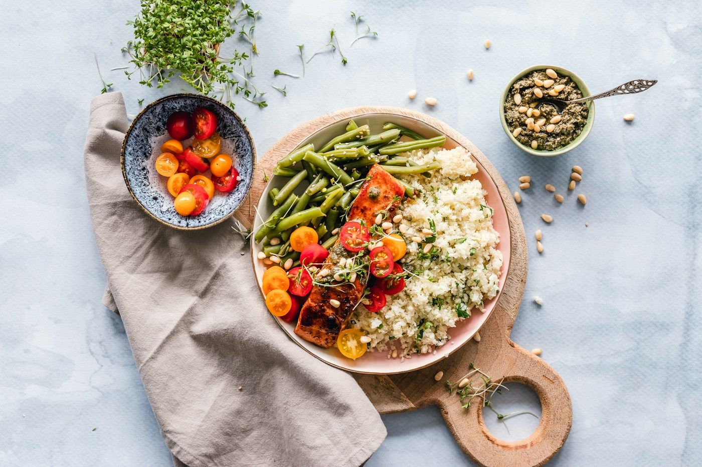
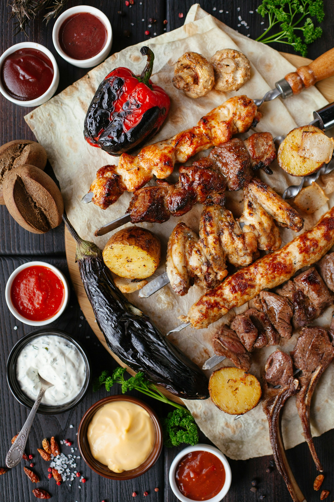

Whipped feta
9Roasted grapes, thyme honey, warm sourdough
A TABLE FAVORITE · VEGETARIANROOTED IN THE MEDITERRANEAN
Sun-ripened flavors, something lovely in your glass, and nowhere else you need to be.
Explore the menu
 A PLACE TO FEEL AT HOME.
A PLACE TO FEEL AT HOME.
OUR TABLE IS YOUR TABLE
We believe the best meals don’t need to be complicated. Just beautiful ingredients, a generous drizzle of olive oil, and people you love around the table.
Our kitchen takes its cues from the Mediterranean: bright, honest flavors, dishes made to share, and a menu that follows the seasons.
Make yourself at home
THE SECRET INGREDIENT?
THERE’S A SEAT FOR YOU
Drop by for a long lunch or make an evening of it.
We’ll take care of the good part.
Demo website: replace the sample email, address, and hours before use. This button opens an email enquiry; it does not confirm a reservation.
24 Olive Lane, Old Town
Sample address — your city here